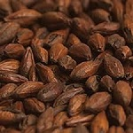

Insumos
Maltas Especiales
Munich
De color ámbar y mucho sabor a malta. Puede ser utilizada como base. -Usos: Cervezas fuertes, oscuras, maltosas, negras. -% de INCL: 100% -Color L°: 8,0-11,0 -Presentación: x1kg y x25kg
Vienna
Fortalece el color y aroma de las cervezas doradas. Aumenta los sabores a malta y aporta sutiles aromas a caramelo y toffe. -Usos: Todos. -% de INCL: 100% -Color L°: 5 -Presentación: x1kg y x25kg
Carapils
Aporta un rico y suave aroma a caramelo y un particular sabor a toffe, otorgando un color ámbar a dorado claro. Le aporta estabilidad a la espuma. -Usos: Cervezas especiales, ales, inglesas y porters -% de INCL: 20% max -Color L°: 2,5 -Presentación: x1kg y x25kg
Melanoidina
Muy aromática, con intenso sabor a malta. Otorga intenso color ámbar a cobrizo, aportando cuerpo y estabilidad. -Usos: Cervezas ámbar y oscuras, estilo escoces. -% de INCL: 20% max -Color L°: 35 -Presentación: x1kg y x25kg
Caramelo 30
Aportan tonos dorados y rubí. otorga más cuerpo que las pilsen. Agradables e intensos aromas y sabores a maltas. -Usos: Cervezas doradas y livinas, blancas, de abadía o trapenses. -% de INCL: 20% max -Color L°: 30 -Presentación: x1kg y x25kg
Caramelo 60
Aporta mucho sabor a caramelo y cuerpo a las cervezas. Aroma a frutas finas y secas. -Usos: Cervezas aromáticas y doradas. Excelente para ales y bocks. -% de INCL: 20% max -Color L°: 60 -Presentación: x1kg y x25kg
Caramelo 120
Aroma y sabor a caramelo tan buscado en las ales belgas fuertes. Aporta mucho color y sabor dulce-amargo. -Usos: Para ales de abadía o trapenses, porters y brown ales. -% de INCL: 10% max -Color L°: 120 -Presentación: x1kg y x25kg
Chocolate
Intenso aroma a café tostado. Puede utilizarse para ajustar el color en porters y stouts. -Usos: Cervezas fuertes, oscuras y negras. Ideal para porters, stouts y brown ales. -% de INCL: 5% max -Color L°: 300-350 -Presentación: x1kg y x25kg
Negra
Color intenso. Aroma a malta y café tostado. Le da un color y aroma agradable a malta y cervezas oscuras. -Usos: Cervezas negras y fuertes. Stouts, porters y bocks. Regulacion de color en cervezas ámbar. -% de INCL: 5% max -Color L°: 450-500 -Presentación: x1kg y x25kg
Cebada tostada
Otorga intenso aroma a café. Ideal para cervezas porter y stouts secas. -Usos: Cervezas negras y fuertes. Stouts, porters y bocks. Regulacion de color en cervezas ámbar. -% de INCL: 5% max -Color L°: 450-500 -Presentación: x1kg y x25kg
Trigo malteado
Aporta aromas y sabor a trigo. Por sus proteinas también se utiliza para dar cuerpo, estabilidad y cremosidad. -Usos: Cervezas de trigo, blancas y coloradas. -% de INCL: 50% max -Color L°: 3 -Presentación: x1kg y x25kg
Avena Arrollada
Aporta sedosidad y cremosidad, también aporta cuerpo y estabilidad. -Usos: Esencial en porters y stouts. -% de INCL: 50% max -Color L°: 1 -Presentación: x1kg y x25kg